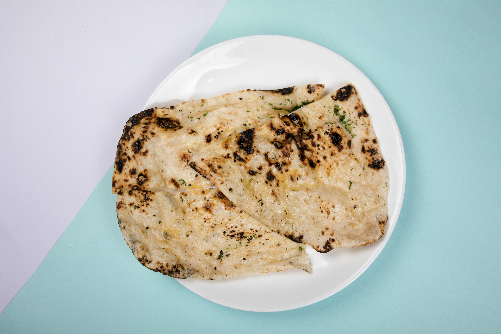

Garlic Naan
Here is an image for you to see what the Garlic Naan is going to look like once you have finished making it!

Description
Garlic naan is a popular, leavened Indian flatbread known for its soft, fluffy, and slightly chewy texture, topped with a generous layer of minced garlic and butter.
Traditionally baked in a tandoor (clay oven), it develops a slightly charred, bubbly exterior.
It is a versatile, savory bread often served alongside rich curries, and dals.
- Prep Time: 35 mins
- Cook Time: 15 mins
- Additional Time: 2 hrs 30 mins
- Total Time: 3 hrs 20 mins
- Servings: 6
Ingredients:
- ½ cup warm water
- 1 teaspoon white sugar
- 1 (.25 ounce) package active dry yeast
- ¼ cup butter
- 2 cloves garlic, minced
- 2 cups bread flour
- ¼ cup plain yogurt
- 1 teaspoon kosher salt
- ¼ cup chopped cilantro
Steps:
- Combine water, sugar, and yeast in a bowl.
Let stand until yeast softens and forms a creamy foam, about 15 minutes.
- Heat butter in a pan over medium heat until melted and sizzling.
Quickly mix in garlic and remove from the heat.
- Add bread flour, yogurt, salt, and 1 tablespoon garlic butter to yeast mixture; stir with a wooden spoon until a shaggy dough forms.
Knead by hand until dough pulls away from the sides of the bowl, adding more water or flour as needed.
Turn dough out onto the counter and continue kneading until it forms a smooth ball, 3 to 4 minutes.
- Place dough into a large bowl and drizzle a few spoons garlic butter over top.
Cover and let rise until doubled in volume, about 2 hours.
- Punch dough down and turn out onto the counter.
Shape into a rough rectangle and cut into 6 pieces. Roll each piece into a ball and lightly dust with flour.
Cover with plastic wrap and proof until slightly puffy, 15 to 20 minutes.
- Preheat a cast iron skillet over medium heat until very hot, 5 to 10 minutes.
- Meanwhile, roll each piece proofed dough into a 1/8-inch-thick oval.
Sprinkle some cilantro on top and press lightly to adhere.
- Working in batches, cook naan in the hot skillet until large bubbles form, 1 to 2 minutes.
Flip, press gently, and continue to cook until bubbles on the bottom are charred, 2 to 3 minutes more.
- Brush naan with more garlic butter before serving.
Are you searching for other recipes? You might find them here!